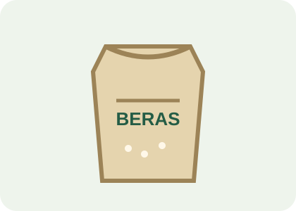
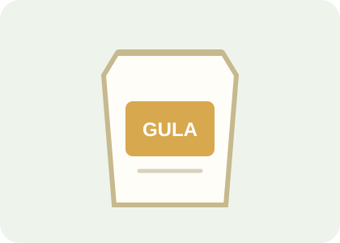
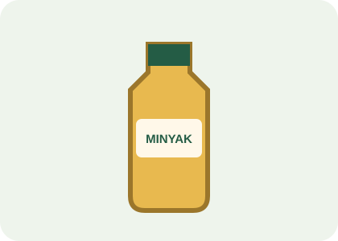
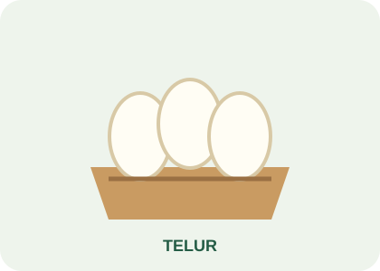
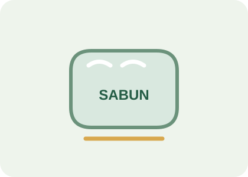

Bahan pokok
Beras
Bahan makanan pokok untuk kebutuhan rumah tangga.
Rp16.000 / kg
KATALOG PRODUK
Berikut beberapa produk dan harga yang tersedia berdasarkan informasi dari pemilik toko.

Bahan pokok
Bahan makanan pokok untuk kebutuhan rumah tangga.
Rp16.000 / kg

Bahan pokok
Pemanis untuk minuman dan berbagai olahan makanan.
Rp10.000 / kg

Kebutuhan dapur
Salah satu kebutuhan dapur untuk memasak.
Rp18.000 / liter

Bahan pangan
Bahan pangan yang dapat diolah menjadi beragam hidangan.
Rp2.000 / butir
Makanan praktis
Makanan praktis untuk pilihan konsumsi sehari-hari.
Rp4.000 / bungkus

Perawatan diri
Perlengkapan kebersihan untuk kebutuhan rumah tangga.
Rp3.000 / batang
Harga dicantumkan berdasarkan data yang diberikan untuk keperluan proyek UTS dan dapat berubah sewaktu-waktu. Gambar produk merupakan ilustrasi, bukan foto produk asli.